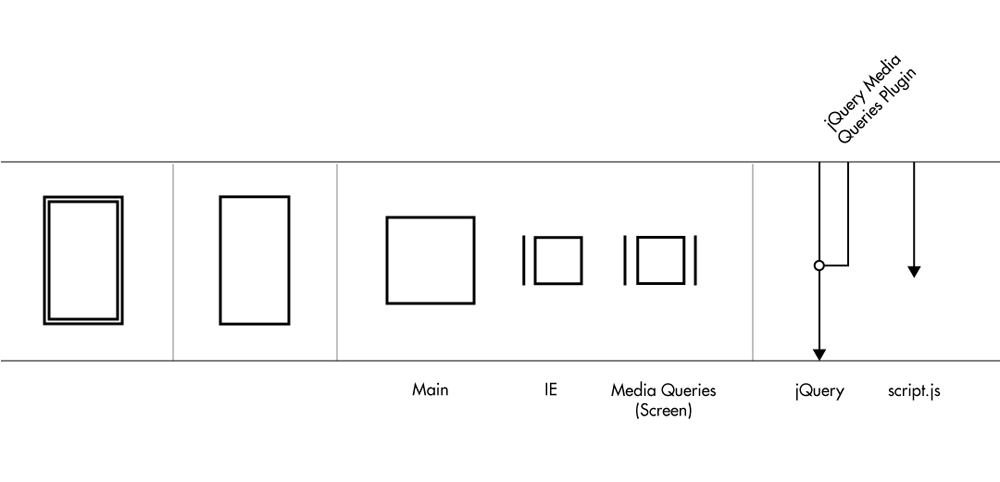
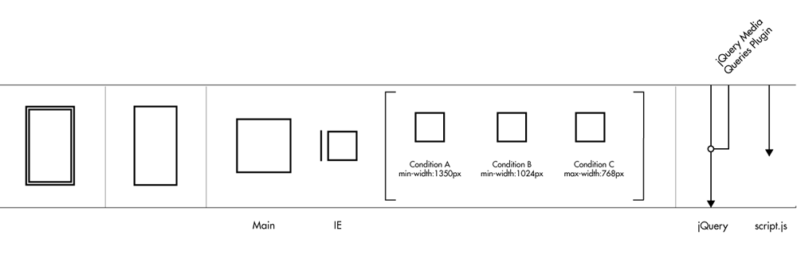
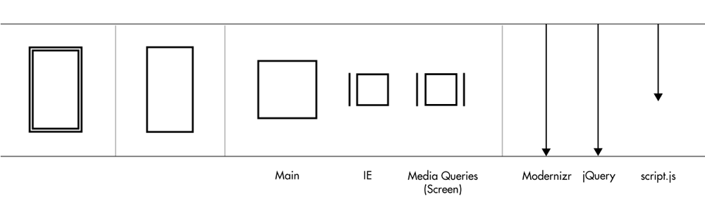
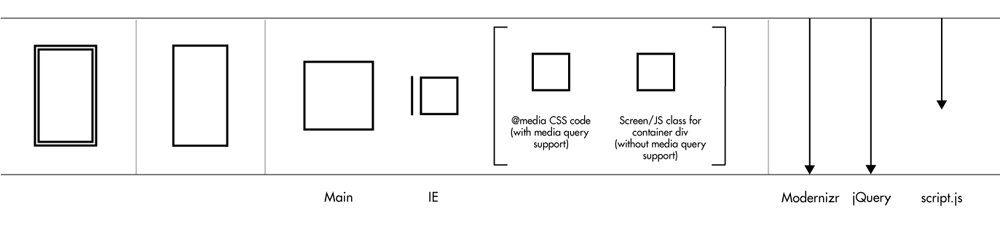

Case Study #3 - Media Queries
Even though this feature did not end up in the final site, this was the first time the CSS media queries were used to change page layout over screen sizes.

As seen in the blown-up version below, there were three sets of CSS code for changing the layout at distinct breakpoints. This feature was available with the most recent browsers. However, for IE, only IE9 had that feature. A plugin was used for the other versions of IE, but only by linking to the files in separate link tags on each page

When contacted by the client, they requested that all the media query references be moved to one page. This was possible but at the sacrifice of the plugin. After some though, travelling to Ottawa, Canada for a CSS workshop, I created a solution (As I found out later, the client attempted a similar solution with no success). Even though displayed symbolically separate, the CSS media queries was moved to main.css (Main). The jQuery plugin was replaced with Modernizr, a feature detection script for CSS3/HTML5. In this case, the script was customized to look for browsers that could support border-radius CSS, something that older browsers and IE8/7/6 did not support. The "flag" was html tag class called ".no-borderradius".

In the end, those browsers that supported border-radius property got the CSS media query code. If not, the "flag" was detected by utility.js code to put screen-size related class to the container div. This would trigger the layout changes, depending on screen width (see below).
